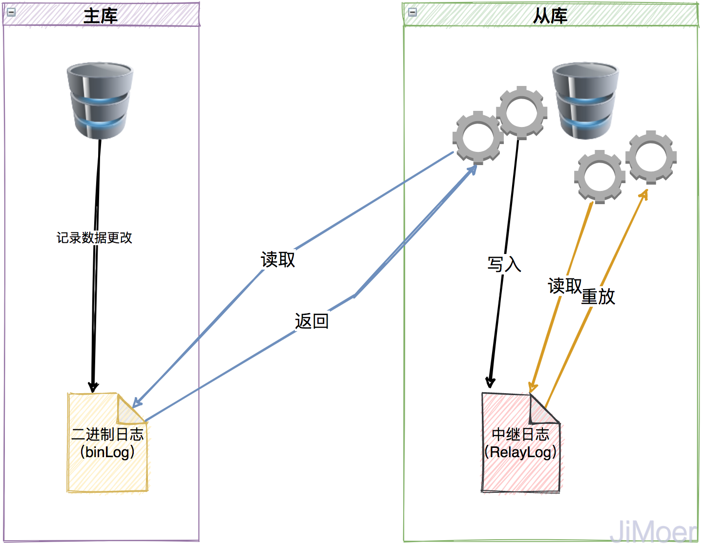
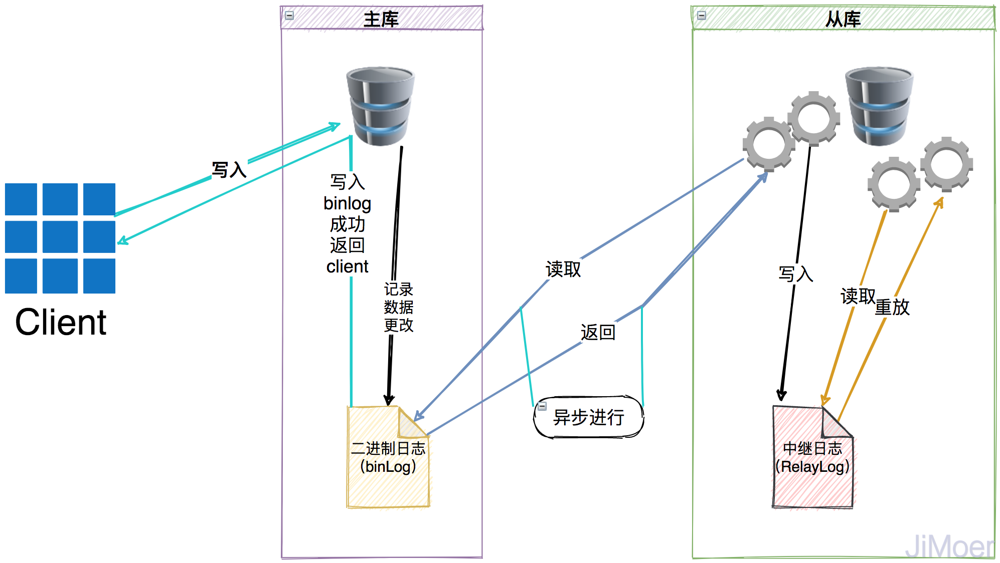
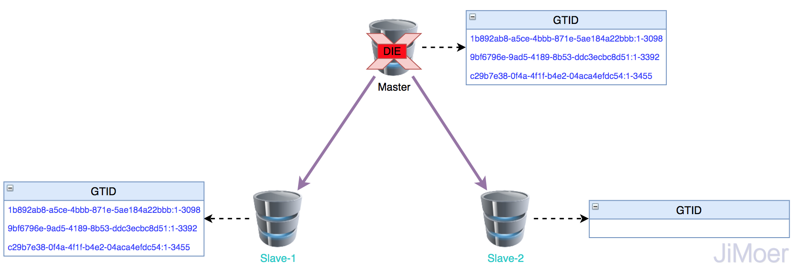
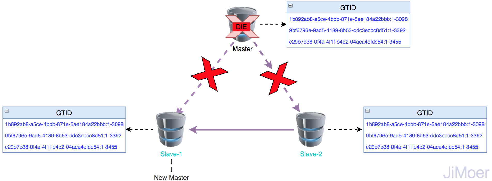

MySQL 的半同步是什么？¶
年后在进行腾讯二面的时候，写完算法的后问的第一个问题就是，MySQL 的半同步是什么？我当时直接懵了，我以为是问的 MySQL 的两阶段提交的问题呢？结果确认了一下后不是两阶段提交，然后面试官看我连问的是啥都不知道，就直接跳过这个问题，直接聊下一个问题了。所以这次总结一下这部分的知识内容，文字内容比较多，可能会有些枯燥，但对于这方面感兴趣的人来说还是比较有意思的。
MySQL 的主从复制¶
我们的一般在大规模的项目上，都是使用 MySQL 的复制功能来创建 MySQL 的主从集群的。主要是可以通过为服务器配置一个或多个备库的方式来进行数据同步。复制的功能不仅有利于构建 高性能应用，同时也是高可用、可扩展性、灾难恢复、备份以及数据仓库等工作的基础。
说的通俗一点，通过 MySQL 的主从复制来实现读写分离，相比单点数据库又读又写来说，提升了业务系统性能，优化了用户体验。另外通过主从复制实现了数据库的高可用，当主节点 MySQL 挂了的时候，可以用从库来顶上。
MySQL 支持的复制方式¶
MySQL 支持三种复制方式：
- 基于语句的复制（也称为逻辑复制）主要是指，在主数据库上执行的 SQL 语句，在从数据库上会重复执行一遍。MySQL 默认采用的就是这种复制，效率比较高。但是也是有一定的问题的，如果 SQL 中使用 uuid()、rand()等函数，那么复制到从库的数据就会有偏差。
- 基于行的复制，指将更新处理后的数据复制到从数据库，而不是执行一边语句。从 MySQL5.1 的版本才被支持。
- 混合复制，默认采用语句复制，当发现语句不能进行精准复制数据时（例如语句中含有 uuid()、rand()等函数），采用基于行的复制。
主从复制原理¶
MySQL 的复制原理概述上来讲大体可以分为这三步
- 在主库上把数据更改，记录到二进制日志（Binary Log）中。
- 从库将主库上的日志复制到自己的中继日志（Relay Log）中。
- 备库读取中继日志中的事件，将其重放到备库数据之上。
主要过程如下图： 
{kind=link}
下面来详细说一下复制的这三步：
第一步：是在主库上记录二进制日志，首先主库要开启 binlog 日志记录功能，并授权 Slave 从库可以访问的权限。这里需要注意的一点就是 binlog 的日志里的顺序是按照事务提交的顺序来记录的而非每条语句的执行顺序。
第二步：从库将 binLog 复制到其本地的 RelayLog 中。首先从库会启动一个工作线程，称为 I/O 线程，I/O 线程跟主库建立一个普通的客户端连接，然后主库上启动一个特殊的二进制转储（binlog dump）线程，此转储线程会读取 binlog 中的事件。当追赶上主库后，会进行休眠，直到主库通知有新的更新语句时才继续被唤醒。 这样通过从库上的 I/O 线程和主库上的 binlog dump 线程，就将 binlog 数据传输到从库上的 relaylog 中了。
第三步：从库中启动一个 SQL 线程，从 relaylog 中读取事件并在备库中执行，从而实现备库数据的更新。 这种复制架构实现了获取事件和重放事件的解耦，运行 I/O 线程能够独立于 SQL 线程之外工作。但是这种架构也限制复制的过程，最重要的一点是在主库上并发运行的查询在备库中只能串行化执行，因为只有一个 SQL 线程来重放中继日志中的事件。
说到这个主从复制的串行化执行的问题，我就想到了一个之前在工作中遇到的一个问题，就是有这么一个业务场景，我们有一个操作是初始化一批数据，数据是从一个外部系统的接口中获取的，然后我是通过线程池里的多个线程并行从外部系统的接口中获取数据，每个线程获取到数据后，直接插入到数据库中。然后在数据全部入库完成后，然后去执行批量查询，将刚插入到数据库中的数据查询出来，放到 ElasticSearch 中。结果每次放入到 ES 中的数据总是不完整，后来研究了半天都不行，最终是让查询也走的主库才解决的问题。当时不知道是 MySQL 主从复制的串行化从而导致的这个问题。
MySQL 主从复制模式¶
MySQL 的主从复制其实是支持，异步复制 、 半同步复制 、 GTID 复制 等多种复制模式的。
异步模式¶
MySQL 的默认复制模式就是异步模式，主要是 指 MySQL 的主服务器上的 I/O 线程，将数据写到 binlong 中就直接返回给客户端数据更新成功，不考虑数据是否传输到从服务器，以及是否写入到 relaylog 中。在这种模式下，复制数据其实是有风险的，一旦数据只写到了主库的 binlog 中还没来得急同步到从库时，就会造成数据的丢失。
但是这种模式确也是效率最高的，因为变更数据的功能都只是在主库中完成就可以了，从库复制数据不会影响到主库的写数据操作。  上面我也说了，这种异步复制模式虽然效率高，但是数据丢失的风险很大，所以就有了后面要介绍的半同步复制模式。
{kind=link}
半同步模式¶
MySQL 从 5.5 版本开始通过以插件的形式开始支持半同步的主从复制模式。什么是半同步主从复制模式呢？ 这里通过对比的方式来说明一下：
- 异步复制模式 ：上面我们已经介绍了，异步复制模式，主库在执行完客户端提交的事务后，只要将执行逻辑写入到 binlog 后，就立即返回给客户端，并不关心从库是否执行成功，这样就会有一个隐患，就是在主库执行的 binlog 还没同步到从库时，主库挂了，这个时候从库就就会被强行提升为主库，这个时候就有可能造成数据丢失。
- 同步复制模式 ：当主库执行完客户端提交的事务后，需要等到所有从库也都执行完这一事务后，才返回给客户端执行成功。因为要等到所有从库都执行完，执行过程中会被阻塞，等待返回结果，所以性能上会有很严重的影响。
- 半同步复制模式 ：半同步复制模式，可以说是介于异步和同步之间的一种复制模式，主库在执行完客户端提交的事务后，要等待至少一个从库接收到 binlog 并将数据写入到 relay log 中才返回给客户端成功结果。半同步复制模式，比异步模式提高了数据的可用性，但是也产生了一定的性能延迟，最少要一个 TCP/IP 连接的往返时间。
半同步复制模式，可以很明确的知道，在一个事务提交成功之后，此事务至少会存在于两个地方一个是主库一个是从库中的某一个。主要原理是，在 master 的 dump 线程去通知从库时，增加了一个 ACK 机制，也就是会确认从库是否收到事务的标志码，master 的 dump 线程不但要发送 binlog 到从库，还有负责接收 slave 的 ACK。当出现异常时，Slave 没有 ACK 事务，那么将自动降级为异步复制，直到异常修复后再自动变为半同步复制
MySQL 半同步复制的流程如下：
{kind=link}
半同步复制的隐患¶
半同步复制模式也存在一定的数据风险，当事务在主库提交完后等待从库 ACK 的过程中，如果 Master 宕机了，这个时候就会有两种情况的问题。
- 事务还没发送到 Slave 上 ：若事务还没发送 Slave 上，客户端在收到失败结果后，会重新提交事务，因为重新提交的事务是在新的 Master 上执行的，所以会执行成功，后面若是之前的 Master 恢复后，会以 Slave 的身份加入到集群中，这个时候，之前的事务就会被执行两次，第一次是之前此台机器作为 Master 的时候执行的，第二次是做为 Slave 后从主库中同步过来的。
- 事务已经同步到 Slave 上 ：因为事务已经同步到 Slave 了，所以当客户端收到失败结果后，再次提交事务，你那么此事务就会再当前 Slave 机器上执行两次。
为了解决上面的隐患，MySQL 从 5.7 版本开始，增加了一种新的半同步方式。新的半同步方式的执行过程是将 “Storage Commit” 这一步移动到了 “Write Slave dump” 后面。这样保证了 只有 Slave 的事务 ACK 后，才提交主库事务。MySQL 5.7.2 版本新增了一个参数来进行配置：rpl_semi_sync_master_wait_point，此参数有两个值可配置：
- AFTER_SYNC ：参数值为 AFTER_SYNC 时，代表采用的是新的半同步复制方式。
- AFTER_COMMIT ：代表采用的是之前的旧方式的半同步复制模式。
{kind=link}
MySQL 从 5.7.2 版本开始，默认的半同步复制方式就是AFTER_SYNC方式了，但是方案不是万能的，因为AFTER_SYNC方式是在事务同步到 Slave 后才提交主库的事务的，若是当主库等待 Slave 同步成功的过程中 Master 挂了，这个 Master 事务提交就失败了，客户端也收到了事务执行失败的结果了，但是 Slave 上已经将 binLog 的内容写到 Relay Log 里了，这个时候，Slave 数据就会多了，但是多了数据一般问题不算严重，多了总比少了好。MySQL，在没办法解决分布式数据一致性问题的情况下，它能保证的是不丢数据，多了数据总比丢数据要好。
这里说几个的半同步复制模式的参数：
mysql> show variables like '%Rpl%';
+-------------------------------------------+------------+
| Variable_name | Value |
+-------------------------------------------+------------+
| rpl_semi_sync_master_enabled | ON |
| rpl_semi_sync_master_timeout | 10000 |
| rpl_semi_sync_master_trace_level | 32 |
| rpl_semi_sync_master_wait_for_slave_count | 1 |
| rpl_semi_sync_master_wait_no_slave | ON |
| rpl_semi_sync_master_wait_point | AFTER_SYNC |
| rpl_stop_slave_timeout | 31536000 |
+-------------------------------------------+------------+
-- 半同步复制模式开关
rpl_semi_sync_master_enabled
-- 半同步复制，超时时间，单位毫秒，当超过此时间后，自动切换为异步复制模式
rpl_semi_sync_master_timeout
-- MySQL 5.7.3引入的，该变量设置主需要等待多少个slave应答，才能返回给客户端，默认为1。
rpl_semi_sync_master_wait_for_slave_count
-- 此值代表当前集群中的slave数量是否还能够满足当前配置的半同步复制模式，默认为ON，当不满足半同步复制模式后，全部Slave切换到异步复制，此值也会变为OFF
rpl_semi_sync_master_wait_no_slave
-- 代表半同步复制提交事务的方式，5.7.2之后，默认为AFTER_SYNC
rpl_semi_sync_master_wait_point
GTID 模式¶
MySQL 从 5.6 版本开始推出了 GTID 复制模式，GTID 即全局事务 ID (global transaction identifier)的简称，GTID 是由 UUID+TransactionId 组成的，UUID 是单个 MySQL 实例的唯一标识，在第一次启动 MySQL 实例时会自动生成一个 server_uuid, 并且默认写入到数据目录下的 auto.cnf(mysql/data/auto.cnf)文件里。TransactionId 是该 MySQL 上执行事务的数量，随着事务数量增加而递增。这样保证了 GTID 在一组复制中，全局唯一。
这样通过 GTID 可以清晰的看到，当前事务是从哪个实例上提交的，提交的第多少个事务。
来看一个 GTID 的具体形式：
mysql> show master status;
+-----------+----------+--------------+------------------+-------------------------------------------+
| File | Position | Binlog_Do_DB | Binlog_Ignore_DB | Executed_Gtid_Set |
+-----------+----------+--------------+------------------+-------------------------------------------+
| on.000003 | 187 | | | 76147e28-8086-4f8c-9f98-1cf33d92978d:1-322|
+-----------+----------+--------------+------------------+-------------------------------------------+
1 row in set (0.00 sec)
GTID：76147e28-8086-4f8c-9f98-1cf33d92978d:1-322 UUID：76147e28-8086-4f8c-9f98-1cf33d92978d TransactionId:1-322
GTID 的工作原理¶
由于 GTID 在一组主从复制集群中的唯一性，从而保证了每个 GTID 的事务只在一个 MySQL 上执行一次。 那么是怎么实现这种机制的呢？GTID 的原理又是什么样的呢？
当从服务器连接主服务器时，把自己执行过的 GTID（ Executed_Gtid_Set: 即已经执行的事务编码 ）以及获取到 GTID（ Retrieved_Gtid_Set: 即从库已经接收到主库的事务编号 ）都传给主服务器。主服务器会从服务器缺少的 GTID 以及对应的 transactionID 都发送给从服务器，让从服务器补全数据。当主服务器宕机时，会找出同步数据最成功的那台 conf 服务器，直接将它提升为主服务器。若是强制要求某一台不是同步最成功的一台从服务器为主，会先通过 change 命令到最成功的那台服务器，将 GTID 进行补全，然后再把强制要求的那台机器提升为主。
主要数据同步机制可以分为这几步：
- master 更新数据时，在事务前生产 GTID，一同记录到 binlog 中。
- slave 端的 i/o 线程，将变更的 binlog 写入到 relay log 中。
- sql 线程从 relay log 中获取 GTID，然后对比 Slave 端的 binlog 是否有记录。
- 如果有记录，说明该 GTID 的事务已经执行，slave 会忽略该 GTID。
- 如果没有记录，Slave 会从 relay log 中执行该 GTID 事务，并记录到 binlog。
- 在解析过程中，判断是否有主键，如果没有主键就使用二级索引，再没有二级索引就扫描全表。
初始结构如下图  当 Master 出现宕机后，就会演变成下图。  通过上图我们可以看出来，当 Master 挂掉后，Slave-1 执行完了 Master 的事务，Slave-2 延时一些，所以没有执行完 Master 的事务，这个时候提升 Slave-1 为主，Slave-2 连接了新主（Slave-1）后，将最新的 GTID 传给新主，然后 Slave-1 就从这个 GTID 的下一个 GTID 开始发送事务给 Slave-2。这种自我寻找复制位置的模式减少事务丢失的可能性以及故障恢复的时间。
{kind=link}
{kind=link}
GTID 的优劣势¶
通过上面的分析我们可以得出 GTID 的优势是：
- 每一个事务对应一个执行 ID，一个 GTID 在一个服务器上只会执行一次;
- GTID 是用来代替传统复制的方法，GTID 复制与普通复制模式的最大不同就是不需要指定二进制文件名和位置;
- 减少手工干预和降低服务故障时间，当主机挂了之后通过软件从众多的备机中提升一台备机为主机;
GTID 的缺点也很明显：
- 首先不支持非事务的存储引擎；
- 不支持 create table ... select 语句复制(主库直接报错);(原理: 会生成两个 sql, 一个是 DDL 创建表 SQL, 一个是 insert into 插入数据的 sql; 由于 DDL 会导致自动提交, 所以这个 sql 至少需要两个 GTID, 但是 GTID 模式下, 只能给这个 sql 生成一个 GTID)
- 不允许一个 SQL 同时更新一个事务引擎表和非事务引擎表;
- 在一个 MySQL 复制群组中，要求全部开启 GTID 或关闭 GTID。
- 开启 GTID 需要重启 (mysql5.7 除外);
- 开启 GTID 后，就不再使用原来的传统复制方式（不像半同步复制，半同步复制失败后，可以降级到异步复制）;
- 对于 create temporary table 和 drop temporary table 语句不支持;
- 不支持 sql_slave_skip_counter;
其实 GTID 的这部分内容挺多的，如果有想深入研究的可以去看看这篇文章。 最后说几个开启 GTID 的必备条件：
- MySQL 5.6 版本，在 my.cnf 文件中添加:
gtid_mode=on (必选) #开启gtid功能
log_bin=log-bin=mysql-bin (必选) #开启binlog二进制日志功能
log-slave-updates=1 (必选) #也可以将1写为on
enforce-gtid-consistency=1 (必选) #也可以将1写为on
- MySQL 5.7 或更高版本，在 my.cnf 文件中添加:
gtid_mode=on (必选)
enforce-gtid-consistency=1 （必选）
log_bin=mysql-bin （可选） #高可用切换，最好开启该功能
log-slave-updates=1 （可选） #高可用切换，最好打开该功能
参考： 《高性能 MySQL》 MySQL 基于 GTID 复制模式